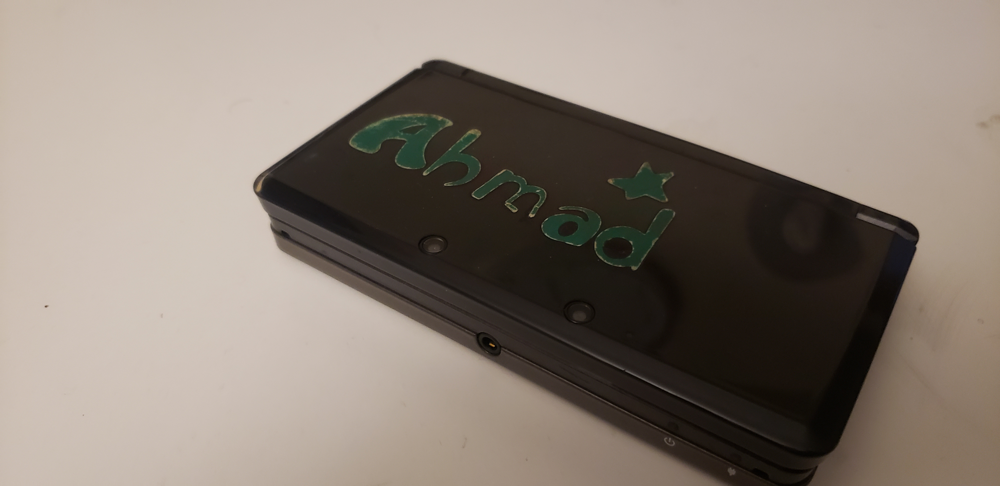

Kindheit
Why do we cling to reminders of our past?
This last Thanksgiving weekend, I’m sure many of us found ourselves wasting a lot of time. Or maybe it was just me? Anyways, looking back, I realize that I did a whole lot of nothing. I watched a few movies on DVD, slept late, woke up late, made some cake, read some assorted books, and generally just whiled away the time. I had other stuff I probably should have been doing, but then again, when is this not true? I guess I just didn’t feel like doing anything, and so I didn’t.
One thing that stuck with me was playing on my 3DS again. I got it out from the back of my closet, where it had been sitting for the better part of the last few years, and turned it on and played some old games I haven’t touched in years, either. While I was grinding for hours, I found myself contemplating the stickers I had had on my 3DS since I bought it, and mentally wrestling about taking them off.
The Nintendo 3DS was announced at E3 2010, and released worldwide in March of the following year. It launched in two colors, Aqua Blue and Cosmo Black (the one I got), and at a steep price of $250 (thankfully, it was gifted to me). As a result of disappointing sales, the price would eventually be reduced to $170; this would not be enough to save the 3DS from becoming the worst-selling Nintendo handheld of all time.
Regardless of poor sales numbers, the 3DS would go on to carve out its own niche, and keep Nintendo afloat and relevant during the nasty failure of the Wii U. It was supported by a number of critically acclaimed games in addition to unique software designed to make use of the system’s various features, such as near field communications, gyroscope sensors, and augmented reality.
To me, the system represents one of my first real introductions to America. When I moved back from Saudi Arabia, it was right around the time when the system was released, and I got one as a sort of welcoming gift from my extended family; who were already established here. At the time, I was about 8 years old, and so it was natural that I placed a bunch of stickers on it, spelling out my name and various designs.
Cut back to today, where I am looking at those exact same stickers, 10 years later. In addition to marveling at just how bad my 8-year old self’s design sense was, I am trying to work up the resolve to take them off. By taking them off, I would be losing a part of my history, a chapter of my life now closed. But I also just turned 18, and am currently in a sort of liminal space of adolescence, between child and adult. What’s the point of clinging to the past?
The funny thing is that I couldn’t decide whether to take them off or keep them on, and so I left them on, simultaneously decision and indecision.
------------------------------------